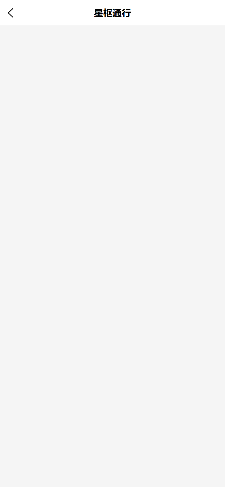
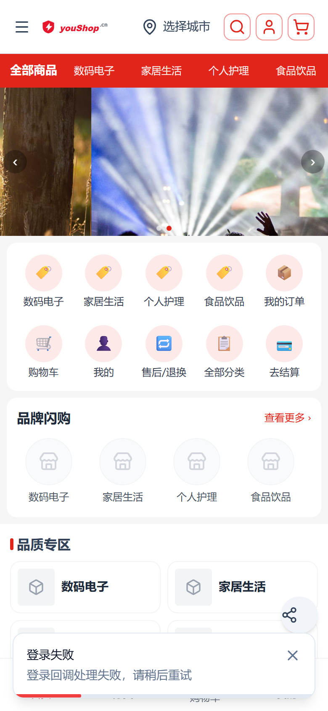
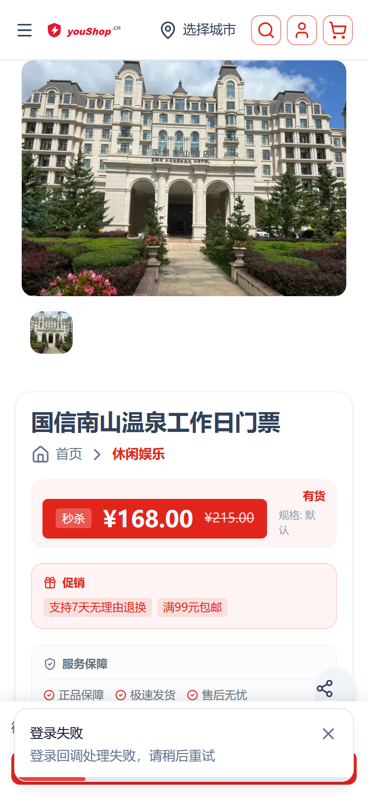

待真机补充截图

待真机补充截图
已部署 nshop 前端，生产 www.youshop.cn 于 2026-09-11。
在微信内置浏览器中访问商城首页且未登录时，自动发起 SSO 微信静默授权登录：自动跳转 h.joho.cn 统一登录页 → 微信授权 → 回跳首页并携带 token → 用 accessToken 直验换 Vendure 会话，登录完成后停留在首页。无需手动点「登录」。
MicroMessenger）+ 当前未登录。youshop_sso_auto_jumped），避免循环打断浏览；失败则停留首页，不无限重试。useAutoWechatSsoLogin.ts（app/composables）在首页 app/pages/index.vue <script setup> 顶层调用。核心：isInWechatBrowser() 检测 UA → useSso.fetchProviders() 从当前渠道 shop-api ssoProviders 动态读 zhao-sso 提供商（不硬编码域名）→ loginWithSso(provider, { returnUrl: 首页 }) 跳 h.joho.cn 统一登录页。回调携带 ?token= 回跳首页后，hasPendingCallback → exchangeSsoAccessToken → authStore.setUser 完成会话建立。
提供商配置存于 Vendure Channel.customFields.authConfig → ssoProviders，前端经 ssoProviders GraphQL 字段动态读取。
superadmin、jiang、chendi-demo/mobile（超管）、zhao@163.com（t1租户管理员 + C端客户）、tang@163.com（平台运营）、test-merchant@e.joho.cn（租户管理员）、admin-official-01~20（官方租户管理员）、johocn@163.com，以及真实微信用户 ssoId=2（赵义涛·吉林银行）、ssoId=3（优佳商贸）。连带删除 77 个测试客户订单；strapi sso_users 中 e2e_t/e2e_cb/e2e_full 测试账号已删。部署方式：本地 pnpm run build → scripts/deploy.mjs (SKIP_BUILD=1) scp .output → pm2 restart（遵守部署铁律，服务器不构建）。
| 步骤 | 截图 | 关键点 |
|---|---|---|
| 微信内访问首页 → 自动跳统一登录页 | 待真机补充截图 | 未登录 + 微信UA → 自动跳 h.joho.cn 统一页 |
| 授权页 / 回跳首页 | 待真机补充截图 | 授权后自动回跳首页并建立登录态 |
| 场景 | 预期 | 结果 |
|---|---|---|
curl https://www.youshop.cn/shop-api 查 ssoProviders | 返回 zhao-sso 提供商（providerKey / baseUrl / clientId / channelCode） | 通过：返回 zhao-sso-youshop-__default_channel__ |
| 桌面浏览器打开首页 | 不跳转，正常浏览（isInWechatBrowser=false） | 通过：URL 保持 www.youshop.cn，无跳转 |
| 站点健康 | nshop :3000 与域名 200 | 通过 |
__default_channel__ 的 zhao-sso 提供项）；确认未设置 youshop_sso_auto_jumped（换会话/清缓存后重试）。?token= 回跳参数与 sessionStorage.youshop_sso_provider 是否一致；token 失效时前端静默清除状态，用户可手动走登录页。/account/https://www.youshop.cn/（404）。根因：回跳目标为完整 URL，Vue Router 对非 / 开头的 location 按相对路径解析导致目录拼接错误；现回跳目标统一归一化为路由安全路径（utils/sso-return-url.ts，登录页/首页/自动登录全链路一次修好）。/account/login（含 /login 别名）、/account/register、/account/sso-callback 不触发自动登录（登录页自带微信流程、注册页有明确意图、回调页是流程中段）。youshop_sso_auto_jumped）；退出登录后本会话不再强制自动登录。/，无拼接错误。


